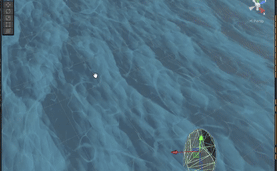
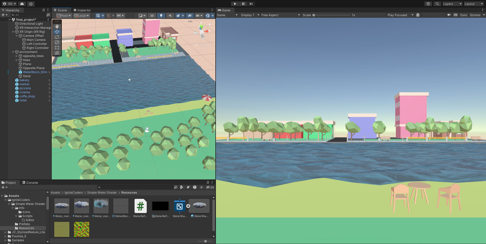
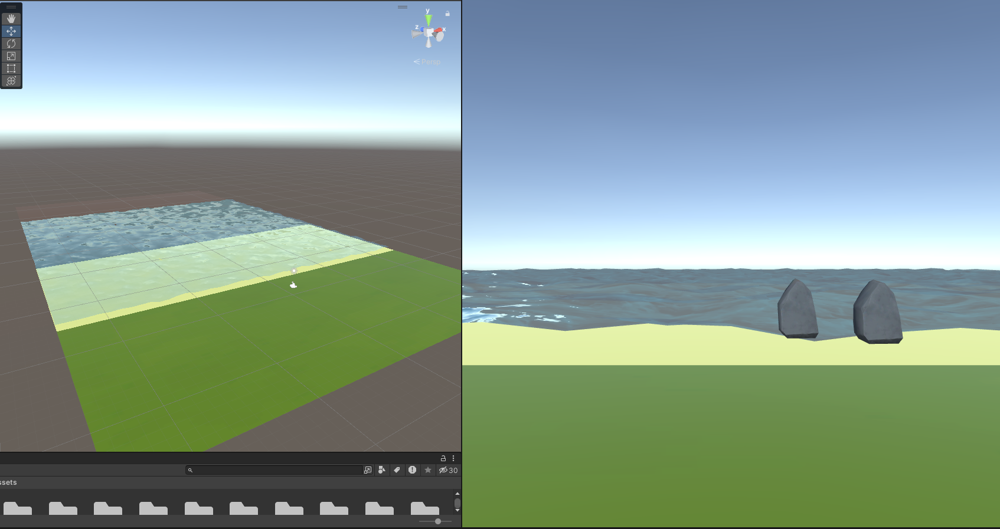
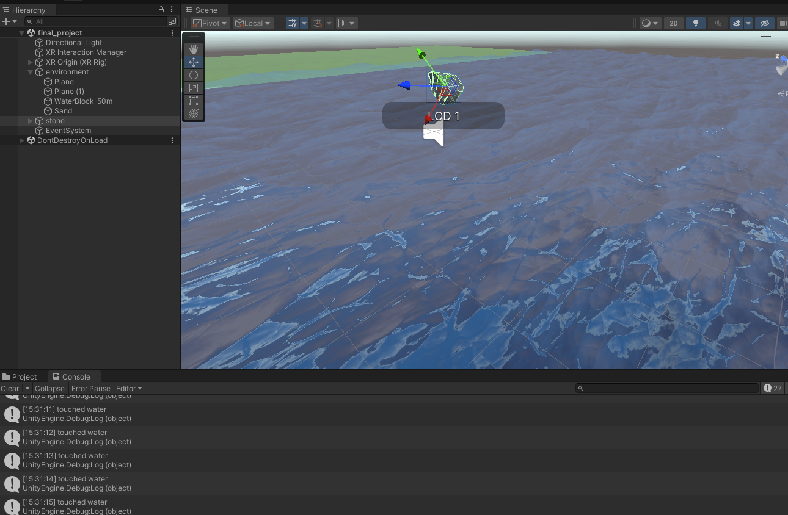
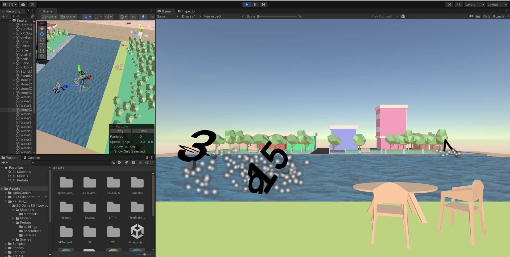

The concept is an open world game for meditation and mental well being. Users can sit to enjoy nature and pick up a stone to skip on the water.
The audience is anyone wanting to enjoy nature and calming scenery with a small activity. The idea avoids competition and focuses on throwing rocks on the water. The platform utilizes head mounted devices and virtual reality.
The objective lets users enjoy 3D scenery of a forest lake with calming sound effects and music. Users can throw stones on the lake, and a higher bounce count results in a higher score. The game is open ended with a minimal user interface to promote immersion.
Users walk around to enjoy the music and scenery. Stones instantiate every 5 seconds for users to pick up and throw into the river.

The setting is a simple beach area with forest or park scenery.
The scenery uses low poly nature assets replicating a Scandinavian aesthetic.


A beach was created using simple 3D shapes and a downloaded water material. Multiple free asset packages were tested because some rendered as pink trees and stones. Suitable ambient sounds including a flowing river, wind, and birds were added.

The focus was on the bouncing stone mechanics. An LOD Group was added to the stone model to reduce rendering load. A script named Stone.cs was created to handle the bouncing off the water by checking the Water tag on collision. The plan to use hand interactions was replaced with controllers due to Unity SDK setup requirements with the Oculus Pro.

Trees and props were added to the scene. The design was shifted to replicate a clean urban view similar to Copenhagen, Denmark. Harbour props were placed in the scene.
A spawner script named StoneSpawner.cs was created to instantiate stones every 1 to 5 seconds within a designated spawn area boundary.
Particle effects for the stone skipping and a bounce counter were added. A TextMeshPro counter was implemented. The game was playtested using the Oculus Pro to adjust weight, throw velocity, and angles.
